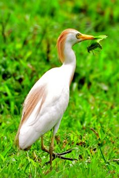

Nomes Populares:Também conhecida como garça-carrapateira, garça-boiadeira, garça-boieira, cunacoi e cupara.
Atualmente a espécie não corre risco de extinção.
Classificação Biológica
Dominio: Eukaryota
Reino: Animalia
Filo: Chordata
Classe Aves
Ordem: Pelecaniformes
Família: Ardeidae
Espécie: B. ibis
Nutrição Geral
Tipo de Nutrição: Heterotrófico.
Insetos: A Garça Boiadeira é principalmente insetívora. Ela costuma se alimentar de insetos que são espantados pelos animais pastadores. Além disso, ela também se alimenta das moscas que se encontram no dorso desses animais.
Pequenos Anfíbios: Quando o gado está em terreno alagadiço, a Garça Boiadeira também busca alimentos no solo, incluindo pequenos anfíbios.
Peixes e Répteis: Embora menos comum, a Garça Boiadeira também pode se alimentar de pequenos peixes e répteis.

Garça Boiadeira se alimentando.
Essa garça tem o hábito de caçar seu alimento longe da água, movendo-se no solo em bandos intraespecíficos, correndo pelo solo em frentes de varreduras pela vegetação rasteira. É interessante notar que, apesar de ser uma garça, a Garça Boiadeira tem uma dieta e hábitos alimentares que diferem bastante das outras espécies de garças, que costumam se alimentar principalmente de peixes e outros animais aquáticos.
Morfologia Básica
Comprimento: A espécie mede cerca de 46–56 cm de comprimento.
Envergadura: Sua envergadura varia de 88–96 cm.
Peso: Pesa entre 270 e 512 gramas.
Pescoço: Possui um pescoço curto e espesso.
Bico: Tem um bico robusto.
Postura: Apresenta uma postura curvada.
Plumagem: Fora da época de reprodução, os adultos possuem principalmente uma plumagem branca, bico amarelo e pernas amarelo-acinzentadas. Durante a época de reprodução, adultos da subespécie ocidental desenvolvem plumagem laranja-amarelo-amarronzado na parte traseira, peito e coroa, e o bico, as pernas e as íris tornam-se vermelho brilhante por um breve período antes da união para acasalamento.
Sexos: Os sexos são semelhantes, mas o macho é um pouco maior e apresenta mais plumagem de reprodução.
Filhotes: Os filhotes apresentam um bico preto e plumagem branca.
Comportamento
Ocorre em grandes bandos em campos secos, áreas abertas com árvores esparsas, capinzais , em fazendas perto do gado, pastos artificiais nas fazendas de pecuária, campos de cultivos, podendo também ser encontrada em margens de pântanos e lagoas e mesmo em arrabaldes de cidades. Proveniente da África, colonizou o país recentemente. Começou a aparecer a partir de 1964 na Ilha de Marajó associada aos búfalos, provavelmente vinda da África, atravessando o Atlântico, ou vindo de colônias pré-fixadas da América do Sul. Procura alimento, de um modo geral, em espaços secos, campos de cultivo, podendo, no entanto, ser encontrada nas margens de lagos e pântanos. É capaz de subsistir em zonas secas, sem nenhuma água, durante um espaço de tempo relativamente longo. Frequentemente avistada entre o gado que pasta ou atrás das máquinas agrícolas que lavram a terra. Seu voo é com batimento lento, poderoso e regular das asas, com o pescoço retraído e as patas projetadas. Ativa e de grande mobilidade. Voa em bandos pouco ordenados.
Distribuição
Ocorre nos Estados Unidos, na América Central e do Sul, incluindo todo o Brasil, e outros países.
Mapa de Ocorrência
Amarelo: Época de reprodução Verde: Ano todo Azul: Não-reprodutores
Reprodução
Nidifica em colônias muitas vezes bem numerosas, em árvores ou arbustos, próximo de lagos e rios. A construção do ninho é feita pelo casal e a fêmea deposita quatro ou cinco ovos que são alternadamente incubados por ambos num período de 22 a 26 dias. As crias abandonam o ninho ao fim de 30 dias.